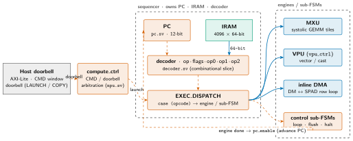
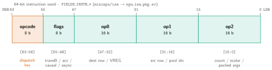
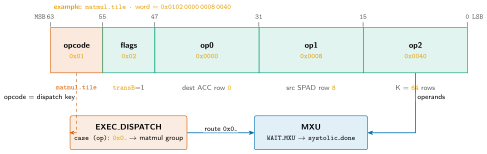
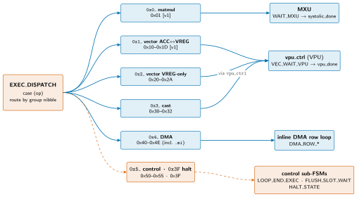

mininpu: Sequencer (Control Path)¶
The sequencer is the compute tile's control unit: it owns the program counter, the instruction RAM, and the decoder, and dispatches each fetched instruction to the right engine (MXU / VPU / DMA) or control sub-FSM. This document zooms in from the sequencer's place in the control plane, to the fetch → decode → dispatch → engine handoff lifecycle, to the 64-bit instruction word and the opcode-group fan-out of EXEC_DISPATCH. The exhaustive opcode-to-case table is not reproduced here --- it is the RTL itself (sequencer.sv + mininpu/isa); this document cites it.
Control in context¶
Slide summary (from the deck build)
- Host rings a doorbell (AXI-Lite);
compute_ctrllaunches the sequencer. - Sequencer owns the PC (
pc.sv), IRAM (4096×64-bit), decoder. EXEC_DISPATCHfans out to MXU / VPU / DMU / control sub-FSM; each done advances the PC.
Figure: seq-context

Zoom 1 --- the sequencer in its control plane. The host doorbell reaches compute_ctrl, which launches the sequencer. The sequencer owns the PC, IRAM, and decoder, and EXEC_DISPATCH fans out to MXU, VPU, the DMU, or a control sub-FSM. Each engine's done pulse advances the PC.
The host rings a doorbell over AXI-Lite. The CP decodes a LAUNCH descriptor (active v1 fields: kbin_addr:64, kbin_size:32; no runtime kernargs in v1, operand addresses are compile-baked immediates), loads the kernel binary from devmem[kbin_addr, kbin_size] into tile IRAM, and pulses start; completion is instr_ready (combinational all-idle flag). The sequencer owns the program counter (pc.sv), the IRAM (4096 × 64-bit), and the combinational decoder (decoder.sv). On each instruction it fans out from EXEC_DISPATCH to one engine --- MXU or VPU (via vpu_ctrl) --- or the tile's DMU (driven by the DMA_ROW_* sub-FSM), or a control sub-FSM (loop / flush.slot / halt). Each engine's done pulse drives pc_enable and the next fetch begins.
Fetch → decode → dispatch lifecycle¶
Slide summary (from the deck build)
- Top FSM: 17 active states (enum widened to 7 bits, 17 of 128 used).
startloads the PC;FETCH_1/2/3pipelines the IRAM read; decoder slices fields.EXEC_DISPATCHroutes; engine runs; done drivespc_enableback toFETCH_1.
Figure: seq-lifecycle

Zoom 2 --- the instruction lifecycle. IDLE loads the PC on start; FETCH_1/2/3 pipelines the IRAM read; the decoder slices the word; EXEC_DISPATCH routes by opcode; the engine runs; its done asserts pc_enable, feeding back to FETCH_1. HALT_STATE (halt / undefined opcode) pulses done and returns to IDLE.
The top FSM has 17 active states (the enum is widened to 7 bits, 17 of 128 used). The common path is a short loop: start loads the PC, FETCH_1/2/3 pipelines the IRAM read so the word is stable, the combinational decoder slices the field map, EXEC_DISPATCH routes by opcode, an engine runs, and its done drives pc_enable back to FETCH_1. Specialized opcodes take a detour through a sub-FSM (pool fetch, DMA row loop, loop control) and rejoin at the same fetch step.
Lifecycle stages¶
Stage by stage, from doorbell launch to PC advance:
Table: lifecycle stages, from doorbell launch through engine handoff to PC advance.
| Stage | State(s) | What happens |
|---|---|---|
| Start | IDLE -> FETCH_1 |
On start, the PC is loaded to the kernel entry point. The CP has already loaded the kernel binary into IRAM (devmem[kbin_addr, kbin_size] → IRAM); the LAUNCH descriptor carries the devmem base address and size, not a slot index or registry handle. |
| Fetch | FETCH_1 / 2 / 3 |
Multi-cycle pipeline that lets the IRAM read settle before the decode is stable. The PC drives the IRAM port-B address; the 64-bit word arrives a few cycles later. |
| Decode | (combinational) | decoder.sv slices the word into op · flags · op0 · op1 · op2 per the FIELDS_INSTR_* layout. Layout-only; per-opcode meaning is applied at dispatch. |
| Dispatch | EXEC_DISPATCH |
A case (op) latches flags and operands, optionally schedules a literal-pool fetch for wide immediates, and selects the next state / engine. |
| Engine handoff | WAIT_MXU, VEC_WAIT_VPU, DMA_ROW_*, … |
The sequencer pulses the engine's start and waits on its done. VEC / CAST are delegated wholesale to vpu_ctrl via a single wait state. |
| Advance | pc_enable |
On the engine's done cycle, pc_enable fires and the PC increments (or jumps), returning to FETCH_1. |
Decode field map --- the 64-bit instruction word¶
Slide summary (from the deck build)
- One 64-bit word:
opcode[63:56] ·flags[55:48] ·op0/op1/op2(16-bit each). - Decoder is layout-only; per-opcode meaning is applied at dispatch.
- Wide immediates carry a literal-pool index;
POOL_FETCHreads the value from IRAM.
Figure: seq-iword

The 64-bit instruction-word bit-field layout the decoder slices, MSB→LSB. opcode[63:56] (the dispatch key), flags[55:48], and three 16-bit operands op0/op1/op2. The field positions are the SSOT in mininpu/isa (FIELDS_INSTR_*) → npu_isa_pkg.sv.
The decoder mirrors the instruction layout in mininpu/isa (and npu_isa_pkg.sv FIELDS_INSTR_*). One 64-bit word splits into a 8-bit opcode, 8-bit flags, and three 16-bit operands:
Table: instruction word fields; bit positions are the SSOT in mininpu/isa (FIELDS_INSTR_*) → npu_isa_pkg.sv.
| Field | Bits | Role |
|---|---|---|
opcode |
[63:56] | 8-bit operation selector (dispatch key) |
flags |
[55:48] | 8-bit per-instruction flags; flags[7:6] = reserved-must-be-zero (dtype removed from v1 encoding; BF16 hardwired; parked/re-claimable); other bits: transB / accum / causal / async |
op0 |
[47:32] | 16-bit operand 0 (dest row / VREG / mask) |
op1 |
[31:16] | 16-bit operand 1 (src row / pool index) |
op2 |
[15:0] | 16-bit operand 2 (row count / scalar / packed args) |
Wide immediates (DRAM addresses, fp32 scalars, loop bounds) do not fit in a 16-bit operand: an operand field instead carries a literal-pool index, and the sequencer's unified pool-fetch sub-FSM (POOL_FETCH_REQ / WAIT) reads the value from IRAM at pool_base + index + step before continuing.
Worked example --- decoding one instruction¶
Slide summary (from the deck build)
mxu.matmulword0x0102 0000 0008 0040: high nibble0x0_→ matmul group → MXU.
Figure: seq-worked

Example: the 64-bit word 0x0102 0000 0008 0040 decoded and dispatched. opcode=0x01 (mxu.matmul) is the dispatch key; flags=0x02 sets causal (flags[1]); op0/op1 carry ACC-out row 0 and activation (spm_x) row 8 (weights already staged by a prior mxu.load.w). EXEC_DISPATCH routes the 0x0_ group to the MXU, which runs and pulses systolic_done. Concrete values are illustrative; encodings are the SSOT in mininpu/isa.
Take one concrete word, 0x0102 0000 0008 0040. The decoder slices it layout-only into the five fields; EXEC_DISPATCH then applies meaning. The high byte 0x01 is mxu.matmul, whose high nibble 0x0_ names the matmul group, so dispatch routes to the MXU and enters WAIT_MXU. flags=0x02 sets the causal bit (flags[1]); op0=0x0000 is the ACC-out row and op1=0x0008 the activation (spm_x) source row, with the weights already preloaded into the inactive buffer by a preceding mxu.load.w (which switches in on this op). The MXU consumes the operands, runs the tile, and pulses systolic_done, which drives pc_enable. These values are illustrative --- the authoritative opcode/flag/operand encodings live in mininpu/isa.
EXEC_DISPATCH fan-out by opcode group¶
Slide summary (from the deck build)
- High nibble names the group;
0x0_→MXU,0x1_/0x2_/0x3_→vpu_ctrl(0x3_= register load/store),0x4_→DMU,0x5_→control (0x5F= halt).
Figure: seq-dispatch

Zoom 3 --- EXEC_DISPATCH fan-out by opcode group. The high nibble names the group; matmul (0x0_) → MXU, the two vector groups and register load/store (0x1_/0x2_/0x3_) → vpu_ctrl, DMU (0x4_) → the inline row loop, control (0x5_, halt at 0x5F) → control sub-FSMs. Group markers are for orientation --- exact opcode values and per-case operand decoding are the SSOT in mininpu/isa and the dispatch body in sequencer.sv.
The opcode's high nibble names its group; EXEC_DISPATCH routes by group to an engine or a control sub-FSM. The nibble map is the SSOT in mininpu/isa: 0x0_ matmul group (mxu.load.w / mxu.matmul), 0x1_ vector ops on ACC↔VREG, 0x2_ vector ops on VREG only, 0x3_ register load/store (acc.store / acc.load / vreg.load), 0x4_ DMU, 0x5_ control (halt at 0x5F). The diagram shows the routing, not the per-opcode case table --- that is the dispatch body in sequencer.sv.
Table: EXEC_DISPATCH opcode-group routing; exact opcode values and per-case operand decoding are the SSOT in mininpu/isa.
| Group | Opcode range | Routed to |
|---|---|---|
mxu.load.w / mxu.matmul (flags[7:6] reserved) |
0x00, 0x01 | MXU → WAIT_MXU |
| VEC / reductions on ACC ↔ VREG [v1] | 0x10--0x1D | vpu_ctrl → VEC_WAIT_VPU |
| VEC VREG-only (0x26/0x27 [v1]; 0x20--0x25/0x28--0x2A [serving]-reserved) | 0x20--0x2A | vpu_ctrl → VEC_WAIT_VPU |
| Register load/store (SPAD bf16 ↔ ACC/VREG fp32) | 0x30--0x32 | vpu_ctrl → VEC_WAIT_VPU |
| DMU load/store [v1] | 0x40, 0x42 | DMA_ROW_* |
DMU paged .mi ([serving]-reserved) |
0x48 / 0x4C | (reserved; no impl on main) |
| Loop control [v1] | 0x50, 0x51 | POOL_FETCH / LOOP_END_EXEC |
loop.begin.csr ([serving]-reserved) |
0x55 | (reserved; no impl on main) |
Async-DMA fence [v1] (flush.slot) |
0x53 | FLUSH_SLOT_WAIT (SPAD-only, masked) |
Halt (halt) |
0x5F | HALT_STATE → drain DMA → done → IDLE |
Loop control --- hardware loops¶
Slide summary (from the deck build)
- Hardware loops avoid host round-trips for tiled kernels; 4 independent induction variables (IVs).
loop.begin(0x50) pushes a frame (IV id / step / lo / body PC);hifrom pool. (loop.begin.csr0x55 is [serving]-reserved.)loop.end(0x51):IV += step; ifIV < hijump back, else fall through.
Hardware loops avoid host round-trips for tiled kernels. The sequencer holds four independent induction variables (IVs).
loop.begin(0x50): pushes a loop frame --- latches IV id, step, lo (initial IV), and the loop body's start PC; thehibound is read from the literal pool. (loop.begin.csr0x55 would sourcehifrom a kernel-arg CSR; it is [serving]-reserved and not implemented on main.)loop.end(0x51): inLOOP_END_EXEC,IV += step; ifIV < hithe PC jumps back to the body start, else it falls through. The compare/increment is combinational (iv_reg_next).
Loop bounds are literal-only by ISA design --- they are not computed from runtime data; this keeps the IRAM-patch (pool) loop bounds statically known to the assembler.
Flush & halt¶
Slide summary (from the deck build)
flush.slot(0x53): the only async-DMA fence --- spins until the SPAD-region slots in the op0 mask reportdma_slot_done, then clears those bits for reuse. The full-fence pseudoflushlowers toflush.slotover all slots (the standalone 0x52 opcode is retired).halt(0x5F): the only terminator --- drains all outstanding DMA slots, then assertsdone. Any undefined opcode also defaults toHALT_STATE.
flush.slot(0x53): the sole async-DMA fence --- spins inFLUSH_SLOT_WAITuntil every SPAD-region slot in the op0 mask reportsdma_slot_done, then clears those done bits for reuse (make-async-real, charter § 4/§ 5). Because the DMU touches SPAD only, this fence guards SPAD regions only. The former full-fenceflush(0x52) opcode is retired; the assembler pseudoflushnow lowers toflush.slotover all slots.halt(0x5F): the only terminator. It sits at the all-ones lower-nibble slot (a clean default-to-halt decode) and drains all outstanding DMA slots before assertingdone("done" = results committed); any undefined opcode also defaults toHALT_STATE. (Ratified 0.4.0 value; the current RTL still homes halt at 0x3F and does not yet drain, tracked as a separate RTL fix.)
Planned evolution → RISC-V control core(s)¶
Slide summary (from the deck build)
- Today's hand-rolled
EXEC_DISPATCHFSM is the present design. - Charter § 4: the command processor is a persistent device unit; the host API initiates commands in all versions. Per #109: the per-tile FSM is a candidate for a RISC-V control core once RTL stabilizes.
- ISA SSOT (
mininpu/isa) + DV coverage gate retarget; sequenced after RTL stabilizes.
The current hand-rolled FSM is the present control design. Charter § 4: the command processor (command_processor.sv) is a persistent device unit that the host API drives in all versions via LAUNCH descriptors; a control MCU is an orthogonal complexity lever, not a version milestone. The per-tile FSM sequencer stays. Per GitHub issue #109, the per-tile EXEC_DISPATCH FSM is also a candidate for replacement by a small RISC-V control core once the RTL stabilizes. A programmable core fits the composable-IP template vision (#108) better than a bespoke FSM; ISA dispatch now hardwired in EXEC_DISPATCH would move to CPU-driven control. The ISA SSOT (mininpu/isa) and the DV ISA-coverage gate would retarget accordingly. Sequencing: after the current RTL stabilizes, not urgent.
Sources¶
This document cites; it does not restate the opcode-to-case table. Authoritative sources:
Table: authoritative sources by concern; this document cites rather than restates the opcode-to-case table.
| Concern | Authoritative source |
|---|---|
Top FSM, EXEC_DISPATCH, sub-FSMs, pool fetch |
npu/src/compute_tile/sequencer.sv |
| Instruction field slicing | npu/src/compute_tile/decoder.sv (mirrors FIELDS_INSTR_*) |
| Program counter (load / advance) | npu/src/compute_tile/pc.sv |
| Chip-level launch / doorbell arbitration | npu/src/npu/compute_ctrl.sv · npu.sv |
| Opcodes, group nibble map, field map, flags, literal pool | mininpu/isa |
Field positions (FIELDS_INSTR_*), flag bits |
npu/src/npu/npu_isa_pkg.sv |
Constants (IRAM_DEPTH=4096, INSTR_WIDTH=64, IRAM_ADDR_WIDTH=12) |
npu/src/npu/npu_config_pkg.sv |
| Tile context | compute_tile · architecture · README.md |
Dispatch specifics live in npu/src/compute_tile/sequencer.sv + mininpu/isa.